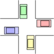

TD n°23 - gestion des processus
| Thème 3 : Architecture matérielle |
|---|
| 23 | Cours : Gestion des processus |
|---|


Rappel⚓︎⚓︎
Un microprocesseur ne comprend que le langage machine. À chaque code d'instruction correspond un circuit électronique afin de pouvoir exécuter l'instruction.
Pour rappel, voici les étapes d'exécution d'une instruction.
- l'instruction pointée par le pointeur d'instruction est chargée en mémoire
- Le pointeur d'instruction est incrémenté vers l'adresse suivante
- l'instruction est décodée
- l'instruction est exécutée
Gestion des processus - ordonnanceur⚓︎⚓︎
Lors de l'exécution d'un programme, celui ci est d'abord chargé en mémoire. Le pointeur d'instruction pointe alors vers la première instruction. Puis l'enchaînement des étapes décrites précédemment s'effectue.
Si tel était réellement le cas, une fois un programme lancé, il faudrait attendre qu'il soit terminé pour pouvoir en lancer un autre. L'enchaînement précédent est correct, mais il faut en plus ajouter le principe des interruptions.
Une interruption est un signal, qui comme son nom l'indique, a pour objectif d'interrompre le cours normal d'un programme afin d'exécuter une tâche particulière.
Le gestionnaire d'interruption reçoit plusieurs arguments, en particulier :
- un code lui permettant de reconnaître le signale de l'interruption et ce qui en est à l'origine.
- une copie des valeurs des registres.
Exemple
Voici quelques interruptions matérielles :
- un disque dur informe qu'il a fini d'écrire des données,
- une carte réseau informe qu'elle a reçoit des données,
- le clavier informe que des combinaisons de touches ont été appuyées.
- l'horloge interne envoie régulièrement un signal.
Cet envoi régulier de signaux de l'horloge, va permettre de gérer plusieurs programmes "simultanément".
Processus concurrents⚓︎⚓︎
Vocabulaire
Voici quelques mots de vocabulaire :
- Exécutable : fichier binaire, directement exécutable par le processeur.
- Programme : Suite d'instructions qui peut éventuellement être exécuté.
- Processus : Programme en cours d'exécution. C'est une instance d'un programme qui est recopié en mémoire vive. Il est identifié par un numéro unique par le système d'exploitation.
Il est caractérisé par :
- l'ensemble de la mémoire qui lui est allouée (binaire, données manipulées, données de la pile .)
- l'ensemble des ressources utilisées (fichiers, connexions réseau, matériel...)
- les valeurs stockées dans tous les registres du processeur
Un même programme peut être exécuté plusieurs fois, chacun dans un processus propre.
- Exécution concurrente : deux processus s'exécutent de manière concurrente lorsque sur un même processeur, l'exécution de l'un est entrecoupée par l'exécution de l'autre.
- Exécution parallèle : deux processus s'exécutent de manière parallèle, s'ils s'exécutent simultanément. Cela implique la présence de plusieurs cœurs.
Afin de gérer les différents processus en cours, le système d'exploitation possède un gestionnaire de processus appelé ordonnanceur.
Son rôle est :
- gérer la récupération du contexte d'exécution de chaque processus. Faire une sauvegarde du contexte du processus qui va être interrompu ou recharger une sauvegarde d'un contexte du processus qui va poursuivre son exécution.
- gérer l'ordre dans lequel vont s'exécuter les différents processus.
Exemple typique
On considère qu'un éditeur de texte, un logiciel de lecture musicale, un navigateur web et d'autres applications sont en action.
- L'éditeur de texte est en cours d'exécution.
- Un signal de l'horloge est envoyé et provoque une interruption.
- L'ordonnanceur réagit à ce signal. Il reçoit le contexte d'exécution du processus correspondant à l'éditeur de texte en action.
- L'ordonnanceur stocke dans un endroit de la mémoire le contexte d'exécution.
- Il choisit de donner la main au logiciel de lecture musicale.
- Il restaure le contexte d'exécution et donc entre autre, la valeur du pointeur d'instruction qui pointe vers la prochaine instruction à exécuter dans le lecteur musical.
- L'ordonnanceur rend la main. La prochaine instruction qui sera exécutée, sera donc celle du lecteur musical.
- Le lecteur musical poursuit son exécution.
- Un signal de l'horloge est envoyé et provoque une interruption.
- etc.
État d'un processus
Durant son exécution, un processus passe par plusieurs états :
- Nouveau : Au lancement d'un programme, est créé un nouveau processus auquel est affecté un numéro PID
- Prêt/Élu : Le processus est prêt à être exécuté/poursuivre son exécution.
- En exécution : Le processus exécute une suite d'instructions.
- Bloqué/En attente : Le processus est en attente de ressources (typiquement des E/S de données : clavier, lecture de fichiers...). Il ne peut pas poursuivre son exécution tant que ces ressources ne sont pas fournies.
- Terminé : Le processus a terminé son exécution. Il faut alors libérer la mémoire utilisée et les ressources utilisées.
On peut résumer le cycle d'un processus avec le schéma suivant :
fig schéma cycle des états d'un processus
Remarque
En fonction de l'attente d'une ressource ou pas, après le stade exécution, un processus repasse à l'état :
- prêt : s'il n'attend aucune ressource, mais seulement que le processeur lui accorde du temps
- bloqué : s'il est en attente d'une ressource
De plus quel que soit son état, il peut aller vers l'état Terminé en raison d'une situation anormale (erreur dans le programme, erreur matérielle...)
Observation des processus⚓︎⚓︎
Sous Linux, on peut observer les processus et leur état en ligne de commande.
Pour tester, cela on peut utiliser : terminal linux en ligne
Voici quelques commandes utiles pour observer les processus :
ps|: elle permet d'afficher la liste des processus en cours. (Pour avoir des informations sur les options taper man ps) Pour lister tous les processus :ps - eftop: Pour observer en temps réels les différents processus.(penser à utiliser man top)
la commandefpermet de gérer les colonnes affichées.-
kill: elle permet de tuer un processus en lui envoyant un signal de fin.- 15 pour arrêter le processus proprement
- 9 pour arrêter immédiatement le processus.
exemple d'utilisation :
kill -15 7654pour tuer proprement le processus dePID 7564
Exercice
Dans un nouvel onglet ouvrir : terminal linux en ligne
- créer un premier terminal :
- utiliser les commandes de l'année précédentes :
ls, cd, touch, cat - pour déterminer le nom d'utilisateur :
whoami - créer un fichier vide
test.py:touch test.py -
éditer le fichier
test.pyavec la commande :nano test.py-
y écrire le code suivant :
python for a in range(100000): print(a) -
pour sortir de l'éditeur : Ctrl+X, puis Y, puis Enter pour confirmer le nom
-
-
lancer le programme avec :
python3 test.py - créer un second fichier
p2.pyavec le code suivant :
while True: pass - le lancer
- Il tourne sans fin. Pour l'arrêter : Ctrl+C
- vérifier la présence dans le dossier des fichiers créés, avec
ls - ouvrir un second terminal puis :
- dans ce second terminal lancer python3 sans nom de fichier
- dans le premier terminal taper
ps -ef -
repérer le PID du processus python3 et le tuer avec la commande kill -9 (voir syntaxe au dessus)
-
ouvrir un troisième terminal
- dans ce troisième terminal lancer la commande
top -
modifier l'affichage pour faire apparaître le PPID (taper f, puis sélectionner/ déplacer avec les touches curseur. Revenir à l'affichage avec Esc)
-
Enfin ouvrir des terminaux supplémentaires pour en avoir au moins 5 et lancer dans les terminaux :
-
1 aucun processus
- 1 avec nano
- 1 avec python3
- 1 avec python3 lançant p2.py
-
1 avec top
-
observer les processus et essayer de les tuer avec la commande kill à partir du premier terminal
- recommencer en relançant les processus et tuer les processus avec le terminal lançant top(puis commande k)
Algorithmes d'ordonnancement⚓︎⚓︎
Il existe plusieurs algorithmes d'ordonnancement. En voici quelques exemples :
- FCFS (First Come First Serve) :
Les différents processus sont stockés dans une file. Le premier processus s'exécute jusqu'à ce qu'il soit dans l'état bloqué. Il est alors mis à la fin de la file d'attente. -
SJF (Shortest Job First) :
Le processus avec le temps supposé le plus court est prioritaire. Si on considère un processus p1 de temps d'exécution t1, un processus p2 de temps d'exécution t2, un processus p3 de temps d'exécution t3. Si les processus sont exécutés les un après les autres alors p1 est terminé au bout de t1, p2 au bout de t1+t2 et p3 au bout de t1+t2+t3. Le temps cumulé pour l'ensemble des processus est alors 3t1+2t2+t3. Pour le minimiser, il faut que : t1<t2<t3. -
Round Robin (ou Algorithme en tourniquet) : Chaque processus se voit attribuer un même temps d'exécution à tour de rôle.
Interblocage (deadlock)⚓︎⚓︎
Lorsque tous les processus utilisent des ressources indépendantes, tout se passe pour le mieux. Mais que se passe-t-il, si un processus utilise une ressource dépendante de ou requise par un autre processus.
On considère les deux programmes suivants :
- Un programme enregistrer_son qui enregistre via le micro. Ce programme demande l'accès à la carte son et enregistre le son sur la sortie standard, puis libère la carte son.
- Un deuxième programme jouer_son joue le son qui arrive sur son entrée standard. Ce programme demande l'accès à la carte son, joue ce qui arrive sur son entrée standard, puis libère la carte son.
Remarque
L'entrée standard correspond généralement à la suite des caractères entrée au clavier. Elle peut être redéfinie. Dans le cadre de la carte son, cela revient à envoyer une suite d'octets correspondant au son à jouer.
La sortie standard est généralement la console. Elle peut, elle aussi, être redirigée vers une autre destination (fichier, écran, entrée d'un autre programme...)
Imaginons la situation suivante :
On dirige la sortie standard du programme enregistrer_son vers un fichier son.mp3. Une fois l'enregistrement terminé, ce fichier est ensuite envoyé sur l'entrée de jouer_son.
Remarque
Sous linux les commandes ressembleraient à :
$ enregistrer_son > fichier.son
$ cat fichier.son > jouer_son
rappel : la commande cat permet d'envoyer sur la sortie standard le contenu d'un fichier.
Ici tout se passe bien. Il y a d'abord l'enregistrement du son dans un fichier, puis il y lecture du fichier. La carte son est acquise pour utilisation, d'abord par le programme enregistrer_son, puis , une fois que celui-ci l'a libérée, par le programme jouer_son.
Imaginons maintenant la situation suivante :
Maintenant on lance les deux programmes de telle façon que la sortie du premier soit envoyée sur l'entrée du second.
Remarque
Sous linux les commandes ressembleraient à :
$ enregistrer_son > jouer_son
Le processus p1 créé pour enregistrer_son requiert l'utilisation de la carte son pour accéder aux données lues par le micro.
Le processus p2 créé pour jouer_son requiert également l'utilisation de la carte son. Mais la carte est monopolisée par p1. Le processus p2 est donc bloqué et mis en attente.
Le processus p1 continue à enregistrer, jusqu'à ce que la mémoire tampon soit pleine. En effet celle-ci n'est pas vidée, car le processus p2 ne peut pas y accéder. Le processus p1 ne peut alors plus enregistrer. Il est également bloqué. Ce phénomène est appelé interblocage(ou deadlock).
C'est typiquement le problème de 4 voitures à un carrefour sans priorité particutlière. Devant laisser la priorité à droite, aucune voiture ne peut avancer.

Cette situation d'interblocage a été théorisée par l'informaticien Edward Coffman (1934-) qui a énoncé quatre conditions (appelées conditions de Coffman) menant à l'interblocage :
- Exclusion mutuelle : au moins une des ressources du système doit être en accès exclusif.
- Rétention des ressources : un processus détient au moins une ressource et requiert une autre ressource détenue par un autre processus
- Non-préemption : Seul le détenteur d'une ressource peut la libérer.
- Attente circulaire : Chaque processus attend une ressource détenue par un autre processus. P_1 attend une ressource détenue par P_2 qui à son tour attend une ressource détenue par P_3 etc... qui attend une ressource détenue par P_1 ce qui clos la boucle.
Exemple
Dans l'exemple précédent :
- Exclusion mutuelle : La carte son est en accès exclusif par le processus p1
- Rétention des ressources : le processus p1 détient l'accès à la carte son et veut écrire sur sa sortie standard qui est saturée(elle n'est donc plus accessible).
- Non-préemption : Seul p1 peut libérer la carte son, p2 ne peut pas la prend l'accès de force.
- Attente circulaire : p1 attend que sa sortie soit accessible (c'est à dire que le tampon mémoire soit lue), alors qu'elle est bloquée par p2 qui attend d'avoir l'accès à la carte son elle-même détenue par p1. D'où la boucle d'attente.
Simulation d'interblocage⚓︎⚓︎
Robosomes créé par Alain BUSSER , Sébastien HOARAU (Voir ici : Robosomes - IREM de la réunion

Le jeu robosomes se joue à un seul joueur sur une grille rectangulaire. Chaque case peut être
- soit vide
- soit couverte par un obstacle fixe (en noir comme aux mots croisés)
- soit couverte d’un pion pouvant bouger, appelé robot
Chaque robot peut être tourné dans l’une des quatre directions cardinales ◀▲▶▼. Les robots peuvent bouger tous en même temps de l’une des façons suivantes :
- G : tous les robots tournent vers leur gauche (de 90°) en même temps
- D : tous les robots tournent vers leur droite (de 90°) en même temps
- A : les robots qui peuvent avancer d’une case, le font. Un robot peut avancer d’une case s’il n’y a pas d’obstacle sur cette case et si aucun robot ne s’apprête à aller sur cette case.
Les cases du bord de la grille sont toutes couvertes d’obstacles fixes, à l’exception de l’une d’entre elles appelée « sortie ». Lorsqu’un robot est sur la case de sortie, tourné vers l’extérieur de la grille, il quitte le jeu et n’est plus soumis aux ordres donnés. Le but du jeu est de faire sortir tous les robots de la grille, en écrivant un mot dans l’alphabet A,G,D, appelé programme et que les robots interpréteront comme décrit ci-dessus.
Voici quelques exemples :
Un premier exemple pour se mettre en route.